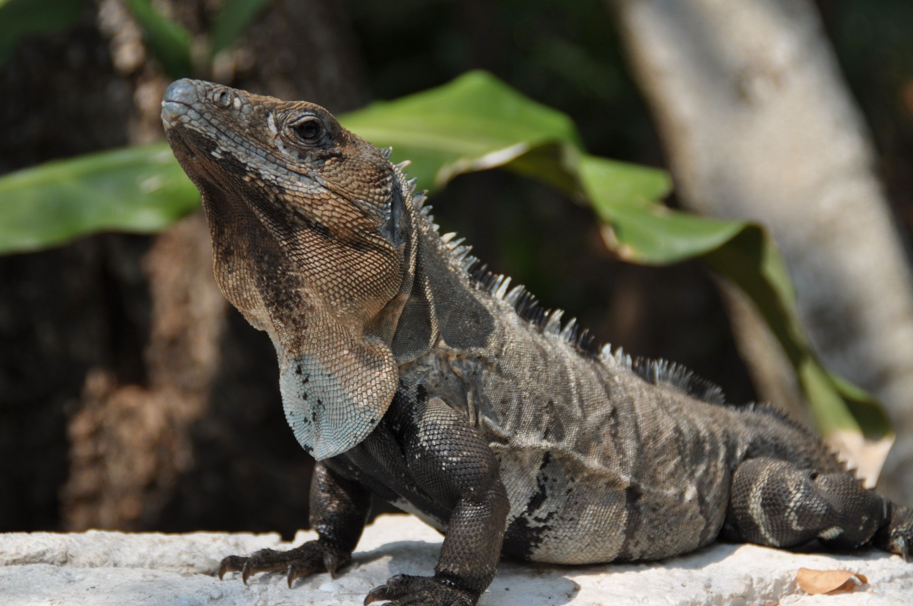
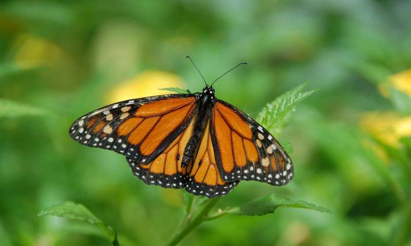

O México é um país de diversidade biológica. Em número total de espécies, ele ocupa o quinto lugar no mundo. Ocupa o primeiro lugar no número total de espécies de répteis (640) e é o lar de mais de 1.000 espécies de aves, 450 de mamíferos (142 encontrados apenas no país) e 330 anfíbios.
O número de espécies de insetos está na casa das centenas de milhares.
MAMÍFEROS
A maioria dos mamíferos do México é encontrada nas zonas mais temperadas e incluem duas espécies de veados, carneiros selvagens, coiotes, raposas, ursos, leões da montanha, jaguares e linces, 4 espécies de coelhos e 350 tipos de roedores.
Os trópicos são o lar de animais como morcegos, aranhas e macacos bugios, o tamanduá sedoso, quatis e anta-de-baird, um animal herbívoro noturno que passa tempo na água.
Quase 30 tipos de cetáceos vivem nos mares, que vão desde a baleia azul, o maior mamífero da terra, até o menor, que é a toninha. Peixes-boi frequentam as águas quentes do litoral e podem ser encontrados em lagoas e estuários.
AVES
As aves do México são muito diversificadas, pois são uma mistura de espécies norte-americanas e sul-americanas. Em áreas pantanosas encontramos aves como maçaricos, garças e garças. Na floresta tropical podemos ver 19 espécies de papagaios, periquitos e araras e 3 espécies de tucanos.
Nas montanhas e savanas do norte vemos beija-flores, papa-moscas e aves de rapina, como o caracará com crista, falcões e águias.
RÉPTEIS E ANFIBIOS
Mais de 1000 espécies de répteis vivem no México incluindo lagartos, iguanas, monstros-de-gila, jacarés e crocodilos. Existem mais de 100 espécies de cobras (das quais 20 são venenosas.)
Sete das oito espécies de tartarugas do mar podem ser encontradas no México e todas estão ameaçadas. São elas: tartaruga-de-kemp, tartaruga-de- couro, tartaruga-verde, tartaruga-preta, tartaruga de pente, tartaruga cabeçuda e a tartaruga-oliva.
PEIXES
Existem 384 tipos de peixes de água doce no México e pelo menos 1.350 espécies oceânicas.
INSETOS
Há entre 2.200 e 2.500 variedades de borboletas e mais de 2.000 espécies de abelhas no México. Todas desempenham um papel importante de polinização das plantas.
